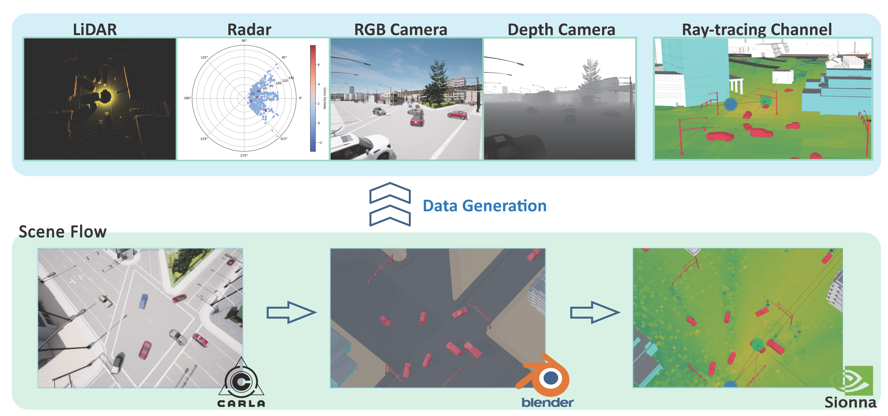

The multimodality is composed of five sensory data (LiDAR, RGB and depth camera, IMU and radar) collected in CARLA and channel multi-path information collected in Sionna. The original workflow is illustrated in the following figure:

Set up your environment and software following instructions in https://github.com/le-liang/Multimodal-Wireless/, you can begin the extension or replay process by following the detailed steps in our tutorial video.
The pipeline changes only in stages 2 and 3. Stage 1 (CARLA sensor capture and per-frame pose recording) remains unchanged.
| Stage | Original workflow | v1.1.0 workflow |
|---|---|---|
| CARLA | Capture sensor data and record vehicle poses for every frame. | Unchanged. Capture the same sensor data and per-frame poses. |
| Blender | Reconstruct and export a complete scene for every frame, storing a sequence of full scenes. | Generate and export only the initial scene. No separate full scenes are generated for subsequent frames, eliminating their intermediate storage requirement. |
| Sionna | Load a complete scene for each frame, then compute its propagation paths and channel data. | Load the initial scene once for the first frame. For each subsequent frame, move and orient the vehicles within the existing scene using the recorded poses, then compute that frame's paths and channel data. This removes repeated scene-loading time. |
Together with code-level optimizations, these changes deliver 20× faster total generation (approximately 95% less time for the same workload) while preserving the generated results. Generating only the initial scene also removes the large storage overhead of keeping full scenes for every frame.
➡️ Watch the v1.1.0 Workflow Tutorial: